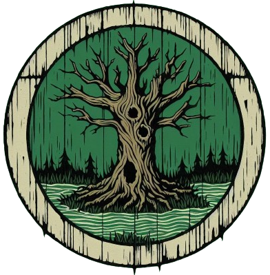

Albische Lande · Fürstentum
Moinneach
Elf Clans.
Zehn Städte. Drei Möglichkeiten.
Drei gelieferte Gebietsaufteilungen mit den Wappen an den jeweiligen Städten. Zum Anschauen, Vergleichen und gemeinsamen Weiterdenken.
- Clans
- 11
- Städte
- 10
- Gebietsaufteilungen
- 3 im Vergleich

Die Gebietsaufteilung
Drei Wege, Moinneach zu gliedern.
01 · Das Land & seine Clans
Wer sitzt wo?
Wappen berühren oder öffnen
für Clan und Stadt ↗
Wappen und Sitz sind durch Linien verbunden
Gebiete der gewählten Variante
Namen und Banner sind Vorschläge für diese Grenzen. Ein Banner öffnet Motiv, Bedeutung und Landschaft. Gemeinsames Gebiet bedeutet noch kein festgelegtes Lehnsverhältnis.
02 · Clans & Städte
Die Zuordnungen im Überblick
Ein Wappen öffnen
für Krieger, Lage und Entwurfsnotizen ↗
Die Vorschau schreibt keine Änderungen in den Almanach oder die Stammbäume.